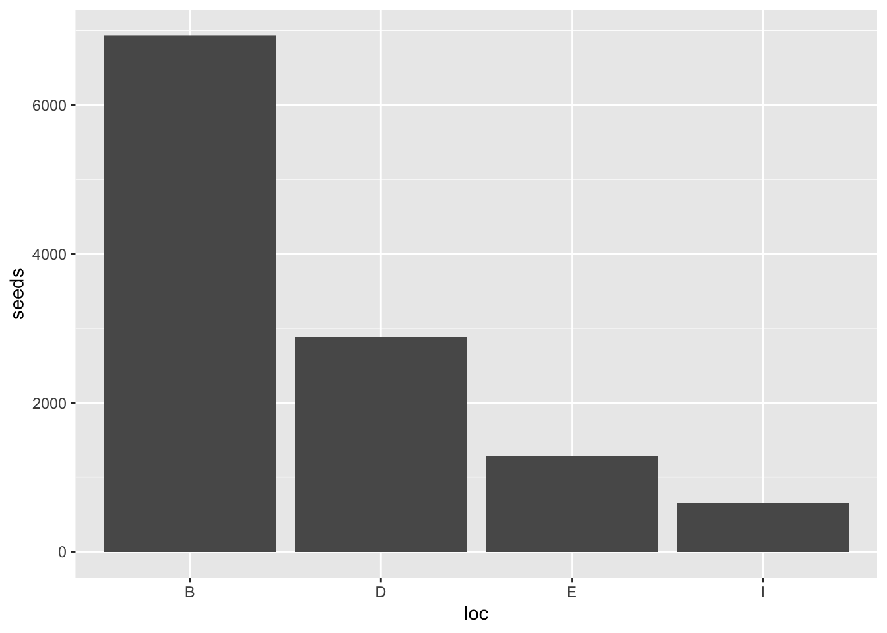
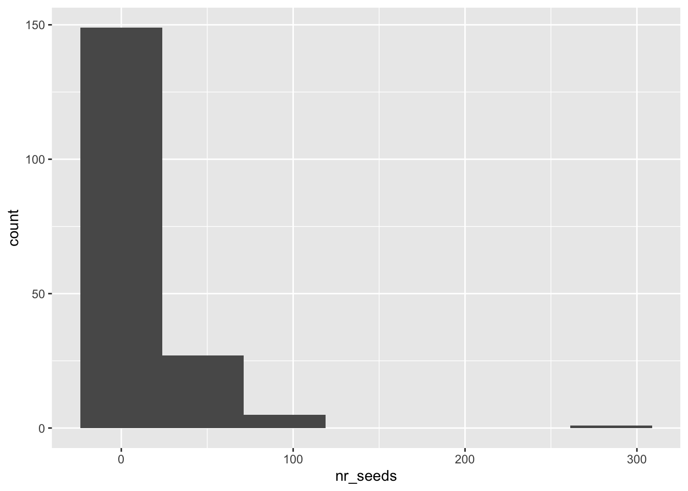
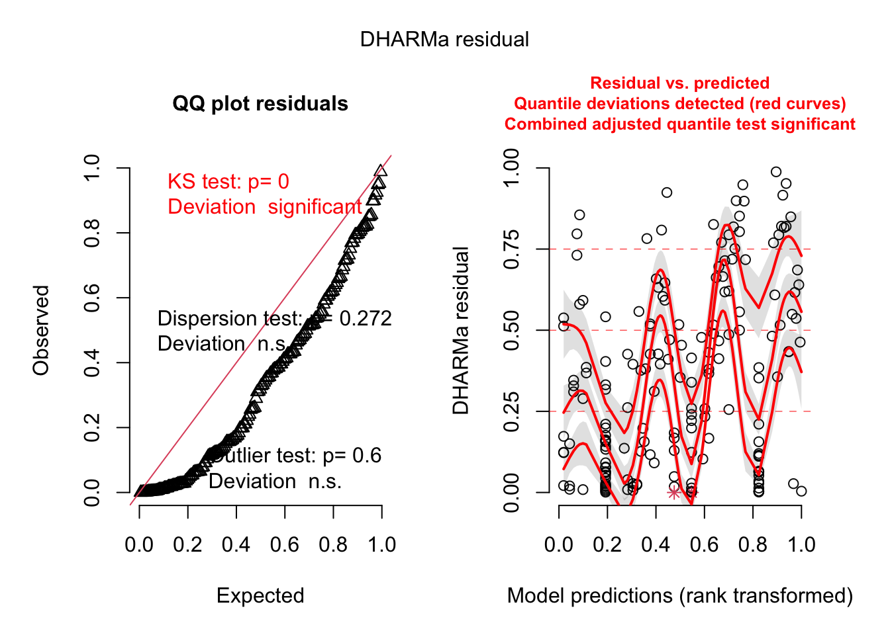

Context: Read Koontz and Simpson 2010, “The composition of seed banks on kangaroo rat (Dipodomys spectabilis) mounds in a Chihuahuan Desert grassland.” Journal of Arid Environments. https://doi.org/10.1016/j.jaridenv.2010.03.008 Data: Koontz, T. and H. Simpson. 2013. Effects of Kangaroo Rat Mounds on Seed Banks of Grass and Shrublands at the Sevilleta National Wildlife Refuge, New Mexico (2001) ver 102459. Environmental Data Initiative.
https://doi.org/10.6073/pasta/115b8095a5e82028869a8c56eff14597 Question: How does total seed number differ between kangaroo rat mound locations?
Introduction
For the first data set which is the study of the effects of Kangaroo Rat Mounds on Seed Banks of Grass and Shrublands at the Sevilleta National Wildlife Refuge, New Mexico, we analyzed the data in order to answer the question, “How does the total seed number differ between kangaroo rat mound locations?”. Studies have shown that rodents, such as kangaroo rats, are important in seed dispersal and therefore the survival of different plant species while reducing water usage in drought ridden areas (Beck). In areas with high rates of drought, and low rodent populations, seed dispersal is less productive and therefore many plant species become endangered. Drought causes a decrease in seed and plant release height, which decreases seed terminal velocity and therefore possibility of germination (Johnson et al). It is important to study the effectiveness of kangaroo rat seed dispersal and the content of seed banks on kangaroo rat mounds for ecological purposes. The results of this study will allow for a better understanding of whether or not kangaroo rats are beneficial or harmful to the longevity of plant species.
Methods:
In order to properly analyze and organize the data set, we first began by reading in the data file using the csv function and saving data within an object named “krat”- as in Kangaroo Rat. The hypotheses we are testing are as follows:
H0: All ranks are equal (no difference in medians) HA: At least two ranks differ (at least one difference in group medians)
The null hypothesis, in biological terms, is that there is not relationship in seed count and mound location, with seed count being random. Whereas the alternative hypothesis claims that mound location is a significant predictor of seed count, with seed count increasing or decreasing according to mound location. After reading in the data and determining our hypothesis, we made a data visualization of the krat data set so we could view the missing data from the frame. As seen in the plot, there are no missing observations for the Kangaroo Rat data set. After determining this, we then created another data visualization using a bar graph with location of the kangaroo rat mound on the x axis and seed count on the y axis. The Kangaroo Rat data set is a record of the observations made for the study, with the recorded data being; direction (dir), location (loc), species (species), and seed number (seeds) for each mound (mnd). There are a total of 1560 observations, spanning different mounds and on a different location for each mound. The mound locations used for the study are as follows; around the base of the mound (B), surrounding area of the mount (D), edge of Bouteloua eriopoda grass (E) and the inter space between the Bouteloua eriopoda grass (I). In order to wrangle and clean the data set to show only the observations needed for the purpose of our analysis, we created a krat_subset object and used the dplyr function to select the two columns of interest: seed count and location and omitted direction, mound and species. With the intention of answering the question “How does total seed number differ between kangaroo rat mound locations?”, we are only interested in seed count and location. To prepare to run statistical analysis on the data frame, we then summarized the data by creating a new object called “krat_subset_summary” and grouping the following values by location: mean, median, standard deviation, variance, count, standard error, and margin of error. A data summary is used to help organize and visually understand the data for the frame in question. After summarizing the data, we created a plot of the krat_subset data to check for the normality of the data, and whether it had a normal distribution. As seen in the figure, data is not normally distributed which can make statistical analysis difficult. In order to properly test the data, we chose to run a Kruskal-Wallis test to compare the seed count data for the four different locations of interest (B, D, E, I). This test is a non-parametric test used to compare the distributions of a continuous or discrete dependent variable across multiple independent groups. As a non-parametric test, it does not make strong assumptions about the shape or distribution of the data. However, there are some assumptions and considerations to keep in mind when conducting a Kruskal-Wallis test:
Independent observations: Observations within each group (B, D, E, and I) are completely independent of each other. Observations in one group are not influenced by observations in any of the other groups.
Similar shape of distributions: Distribution shape was checked using a QQ-plot for each of the mound locations and all distributions were visually similar. All distributions look relatively flat without a strong linear relationship. However, after 2 standard deviations away from the mean, the data points rapidly increase.
Homogeneity of variances: If there is homogeneity of variances, the dependent variable across the groups being compared should be similar.
Random Sampling: 10 active kangaroo mounds were randomly selected and 16 samples were collected per mound on the base of the mound and on the disturbed area surrounding the mound.
Categorical predictor variables: The predictor variables are the mound location, which are categorical data because the they are identified based on four different labels.
Each group should have at least 5 observations.
To test for homogeneity of variances, we ran a Levene test using seeds as the dependent variable and mound location as the grouping variable. The significant p-value of 2.66e-09 indicates that there is no homogeneity of variances, but, since the Kruskal-Wallis test is non-parametric, it is less sensitive to violations of this assumption and can still be used. After running these two tests, we then measured the effect size of the data set which informs us the significance of the relationship between our variables on a numerical scale, and therefore how important and applicable it is to the “real world”.
library(tidyverse)
── Attaching core tidyverse packages ──────────────────────── tidyverse 2.0.0 ──
✔ dplyr 1.1.2 ✔ readr 2.1.4
✔ forcats 1.0.0 ✔ stringr 1.5.0
✔ ggplot2 3.4.2 ✔ tibble 3.2.1
✔ lubridate 1.9.2 ✔ tidyr 1.3.0
✔ purrr 1.0.1
── Conflicts ────────────────────────────────────────── tidyverse_conflicts() ──
✖ dplyr::filter() masks stats::filter()
✖ dplyr::lag() masks stats::lag()
ℹ Use the conflicted package (<http://conflicted.r-lib.org/>) to force all conflicts to become errors
library(here)
here() starts at /Users/graycenmahon/Downloads/GitHub/final_exam_collab_repo
library(janitor)
Attaching package: 'janitor'
The following objects are masked from 'package:stats':
chisq.test, fisher.test
Attaching package: 'flextable'
The following object is masked from 'package:purrr':
compose
library(car)
Loading required package: carData
Attaching package: 'car'
The following object is masked from 'package:dplyr':
recode
The following object is masked from 'package:purrr':
some
library(broom)library(corrplot)
corrplot 0.92 loaded
library(AICcmodavg)library(GGally)
Registered S3 method overwritten by 'GGally':
method from
+.gg ggplot2
Attaching package: 'rstatix'
The following object is masked from 'package:janitor':
make_clean_names
The following object is masked from 'package:stats':
filter
# checking to make sure the "here" package is starting at the correct directoryhere()
#reading in data setkrat <-read_csv(here("data/sev208_kratseedbank_20120213.csv"))
Rows: 1560 Columns: 5
── Column specification ────────────────────────────────────────────────────────
Delimiter: ","
chr (3): dir, loc, species
dbl (2): mnd, seeds
ℹ Use `spec()` to retrieve the full column specification for this data.
ℹ Specify the column types or set `show_col_types = FALSE` to quiet this message.
# Exploring data with a bar graphggplot(data = krat, aes(x = loc, y = seeds)) +geom_col()

# create a new object called krat subset krat_subset <- krat %>%# select the columns of interest (mound location and seed count) dplyr::select("loc", "seeds")
# create a summary subset of the krat data grouped by location and calculate mean, standard deviation, variance, count, standard error, and margin of error for seeds for each locationkrat_subset_summary <- krat_subset %>%group_by(loc) %>%summarize(mean =mean(seeds),median =median(seeds),sd =sd(seeds),var =var(seeds),count =length(seeds),se = sd/sqrt(count),margin =qt(0.975, df = count -1) * se)# Display summary statisticskrat_subset_summary
# A tibble: 4 × 8
loc mean median sd var count se margin
<chr> <dbl> <dbl> <dbl> <dbl> <int> <dbl> <dbl>
1 B 17.8 0.5 69.4 4810. 390 3.51 6.90
2 D 7.38 0.225 27.2 741. 390 1.38 2.71
3 E 3.29 0.25 9.65 93.0 390 0.488 0.960
4 I 1.66 0 4.03 16.3 390 0.204 0.402
#check the distribution of the data grouped by mound locationggplot(data = krat_subset) +stat_qq(aes(sample = seeds)) +stat_qq_line(aes(sample = seeds), color ="red") +facet_wrap(~ loc)
# Using krat_subset as dataframe and dependent variable 'seeds' and a grouping variable 'loc'library(car)# Perform Levene's testleveneTest(seeds ~ loc, data = krat_subset)
Warning in leveneTest.default(y = y, group = group, ...): group coerced to
factor.
Levene's Test for Homogeneity of Variance (center = median)
Df F value Pr(>F)
group 3 14.474 2.66e-09 ***
1556
---
Signif. codes: 0 '***' 0.001 '**' 0.01 '*' 0.05 '.' 0.1 ' ' 1
kruskal.test(seeds ~ loc, data = krat_subset)
Kruskal-Wallis rank sum test
data: seeds by loc
Kruskal-Wallis chi-squared = 21.932, df = 3, p-value = 6.738e-05
# Comparison of ranks for Kruskal Wallis based on H statisticrstatix::kruskal_effsize(seeds ~ loc, data = krat_subset)
# A tibble: 1 × 5
.y. n effsize method magnitude
* <chr> <int> <dbl> <chr> <ord>
1 seeds 1560 0.0122 eta2[H] small
Results
After wrangling, cleaning and organizing the data for problem 1, we used different tests and created model objects in order to analyze the data. In checking the normality of the Kangaroo rat subset, we found that the distributions are not normal, with the distribution on the graph looking relatively flat. However, as the data points get progressively more positive standard deviations away from the mean, the plot increases exponentially and rapidly, creating a sharp uptick in trend at the end of each plot. For each location, the distributions all follow this same trend. Next, we ran the Kruskal Wallis test which resulted in a very low p value (6.74 * 10^(-5)), indicating that mound location has a significant effect on seed count. The effect size test resulted in a very low value of 0.0128, which discerns the applicability of these results of other kangaroo rat mounds and seed count, with a low effect size signifying a limited practical application. Although the p-value indicates that mound location influences seed count, the effect size tells us that these results cannot be considered the rule when discussing similar applications in ecological research.
Citations:
Beck, J Maurice. 30 August 2010. Seed Dispersal by Scatter-hoarding Rodents in Arid Environments (2010). British Ecological Society. https://besjournals.onlinelibrary.wiley.com/doi/full/10.1111/j.1365-2745.2010.01716.x
Johnson JS, Cantrell RS, Cosner C, Hartig F, Hastings A, Rogers HS, Schupp EW, Shea K, Teller BJ, Yu X, Zurell D, Pufal G. Rapid changes in seed dispersal traits may modify plant responses to global change. AoB Plants. 2019 Mar 28;11(3):plz020. doi: 10.1093/aobpla/plz020. PMID: 31198528; PMCID: PMC6548345.
Koontz, T. and H. Simpson. 2013. Effects of Kangaroo Rat Mounds on Seed Banks of Grass and Shrublands at the Sevilleta National Wildlife Refuge, New Mexico (2001) ver 102459. Environmental Data Initiative. https://doi.org/10.6073/pasta/115b8095a5e82028869a8c56eff14597 (Accessed 2023-06-10).
Problem 2
Data: Seaver, M. 2022. Individual and community flowering phenology, seed counts and pollinator
visitation rates in shrub and open plots across Niwot Ridge, 2019 - 2021. ver 1. Environmental Data Initiative. https://doi.org/10.6073/pasta/edc4ab2faf7dd96cd1deac1544d5f2b9 Questions: How does seed count vary with plot type (shrub or open), plant species, and total number of inflorescences? Is there a simpler model that explains seed count, and if so, what is it?
Introduction
For the second data set, which is the study of individual and community flowering phenology, seed counts and pollinator visitation rates in shrub and open plots across Niwot Ridge (the arctic tundra) we analyzed the data in order to answer the questions, “How does seed count vary with plot type (shrub or open), plant species, and total number of inflorescences? Is there a simpler model that explains seed count, and if so, what is it?”. Studies show that increased shrub abundance can lead to increased levels of snow which can allow for “higher winter soil temperatures, greater microbial activity, and more plant-available nitrogen. High levels of soil nitrogen favor shrub growth the following summer” (Sturm et al). Each of these characteristics can lead to increased growth in spring and summer, altering species richness and plant community composition. According to Seaver’s study from the Environmental Data Initiative, this can therefore effect the reproductive success of plants, which is studied through phenology- the timing of flowering in plants (Seaver). Flowering times are affected by surrounding plant and insect species, and studies show that the most common flowering time of plants is during seasons with higher biodiversity. Increased shrubs would indicate higher rates of flowering.
Methods
To begin statistical analysis of the second problem and dataset, we began as we did with problem 1: by reading in the data using the csv function and storing it under an object named seed_1. We reviewed the data and determined our null and alternative hypotheses:
H0: Seed count is not predicted by plot type (shrub or control/open), plant species, and total number of inflorescence. There is no relationship between seed count and the predictor variables. HA: Seed count may be predicted by plot type (shrub or control/open), plant species, and total number of inflorescence. There is a relationship between seed count and the predictor variables.
Next, we made a missing data visualization, and captioned the plot accordingly, in order to view any missing data points from the frame. We found that there was missing data in the number of seeds, the number of inflorescences collected, the weight of seeds, and observational distance from the shrub. However, for the purpose of answering the questions “How does seed count vary with plot type (shrub or open), plant species, and total number of inflorescences? Is there a simpler model that explains seed count, and if so, what is it?”, we are only concerned with the missing values in the first two mentioned. We then created a ggpairs plot in order to graph the relationship between each variable using the seed data set which helps with data visualization and understanding. In order to properly analyze the data, we created multiple objects and used the pipe operator to narrow down the data table to the following variables of interest: species, treatment, number of seeds, number of inflorescences, and number of inflorescences collected. We then used the drop_na function to remove the missing values, leaving us with a cleaned data subset called “seed_col3”. Then, we made a secondary data visualization with the new sub-setted data in the form of a histogram. We can see that the frequency distribution is right skewed, with the majority of plots having 0 seeds (almost 150 plots) and very few having more than 50 seeds (only ~12 plots). To determine which variable had the largest effect on seed count, we made multiple linear and generalized linear models with the seed column data set. Generalized linear models, as opposed to a traditional linear model, allowed us to predict non-continuous values- which we experienced with some of our variables. Seed model 2 and 2a are both generalized linear models with a poisson distribution, containing the variables species, total number of inflorescences, and plot type (treatment). The second set of models are generalized linear models 3 and 3a with a negative binomial distribution. We then made models 4-4a and 5-5a with first a poisson distribution and the random effect and the second with a negative binomial distribution and the random effect. The random effect variable we chose to use was the number of inflorescences collected from each plant. We then checked the residuals and ran diagnostics on each of the models (2, 3, 4, 5, and a) using the simulated residuals function and plotting it using the plot function. These show the QQ plot of the residuals and compare them against the predictor variables included in the models. After running diagnostics, we used the MuMin model select function to test the distributions of each model for validity and select the best suited model for the data set. The best suited model is the model that influences and best predicts the dependent variable in question, in this case the model we chose was model 3, and we viewed and summarized the model object before defining the confidence interval using the confint function in R. The adjusted R2 values found in the next code chunk is used to adjust a linear model that is showing multiple independent variables. The marginal R-squared shows the proportion of variances that are explained by the independent variables in the model. There are multiple ways of calculating R2; log normal, tridelta and gamma and the former better explains a higher proportion of variances in the response as compared to the latter two options; which is why it was used in this analysis. The final visualization for this analysis is in the form of a ggplot using ggpredict to show the linear model predictions. The x axis is total number of inflorescences while the y axis is number of seeds. Each treatment (shrub or control) is separated by color - orange and blue respectively. There are 5 plots, split into species to show us how seed count varies with the multiple variables. The points on the graph are seed count while the ribbon represents the maximum and minimum predictor values shows in the seed_predictor subset.
#packages for modellibrary(MASS)
Attaching package: 'MASS'
The following object is masked from 'package:rstatix':
select
The following object is masked from 'package:dplyr':
select
library(lme4)
Loading required package: Matrix
Attaching package: 'Matrix'
The following objects are masked from 'package:tidyr':
expand, pack, unpack
Attaching package: 'lme4'
The following object is masked from 'package:AICcmodavg':
checkConv
library(glmmTMB)
Warning in checkMatrixPackageVersion(): Package version inconsistency detected.
TMB was built with Matrix version 1.5.4
Current Matrix version is 1.5.4.1
Please re-install 'TMB' from source using install.packages('TMB', type = 'source') or ask CRAN for a binary version of 'TMB' matching CRAN's 'Matrix' package
Warning in checkDepPackageVersion(dep_pkg = "TMB"): Package version inconsistency detected.
glmmTMB was built with TMB version 1.9.3
Current TMB version is 1.9.4
Please re-install glmmTMB from source or restore original 'TMB' package (see '?reinstalling' for more information)
library(DHARMa)
This is DHARMa 0.4.6. For overview type '?DHARMa'. For recent changes, type news(package = 'DHARMa')
library(MuMIn)
Attaching package: 'MuMIn'
The following objects are masked from 'package:AICcmodavg':
AICc, DIC, importance
library(ggeffects)library(lmtest)
Loading required package: zoo
Attaching package: 'zoo'
The following objects are masked from 'package:base':
as.Date, as.Date.numeric
The following object is masked from 'package:naniar':
n_complete
library(GGally)library(flextable)
#suppresses messages from R, set messages and warning to falseknitr::opts_chunk$set(echo =TRUE, message =FALSE, warning =FALSE)#suppress any messages from R using the code chunk above, setting messages and warnings to false}
#reading in the data sets for problem 2seed_1 <-read_csv(here("data/shrubstudy_seed_ctwt.ms.data.csv"))
Rows: 287 Columns: 13
── Column specification ────────────────────────────────────────────────────────
Delimiter: ","
chr (5): date_collected, aspect, treatment, species, notes
dbl (8): shrub_num, tag_num, plant_nr, dist_fr_shr, total_nr_infl, nr_infl_c...
ℹ Use `spec()` to retrieve the full column specification for this data.
ℹ Specify the column types or set `show_col_types = FALSE` to quiet this message.
#create missing data visualization for seed 1 dataset. add in caption and adjust spacinggg_miss_var(seed_1) +labs(caption ="Missing Data in the Seed Dataset") +theme(plot.caption =element_text(hjust =0.6))
#skim the data set to get an idea of what it containsskim(seed_1)
Data summary
Name
seed_1
Number of rows
287
Number of columns
13
_______________________
Column type frequency:
character
5
numeric
8
________________________
Group variables
None
Variable type: character
skim_variable
n_missing
complete_rate
min
max
empty
n_unique
whitespace
date_collected
0
1
3
7
0
7
0
aspect
0
1
5
5
0
2
0
treatment
0
1
5
7
0
2
0
species
0
1
6
6
0
19
0
notes
0
1
3
15
0
4
0
Variable type: numeric
skim_variable
n_missing
complete_rate
mean
sd
p0
p25
p50
p75
p100
hist
shrub_num
0
1.00
29.53
16.04
5.00
13.00
30.00
44.00
54.00
▆▁▇▂▅
tag_num
0
1.00
143.48
63.71
22.00
104.00
159.00
181.00
300.00
▃▂▇▂▁
plant_nr
0
1.00
2.43
1.34
1.00
1.00
2.00
3.00
5.00
▇▆▅▃▂
dist_fr_shr
173
0.40
21.05
18.45
-34.00
6.00
24.00
33.88
63.00
▁▃▆▇▂
total_nr_infl
0
1.00
5.15
10.45
1.00
1.00
1.00
5.00
117.00
▇▁▁▁▁
nr_infl_coll
6
0.98
4.63
10.66
0.00
0.00
1.00
4.00
117.00
▇▁▁▁▁
nr_seeds
105
0.63
14.55
28.62
0.00
1.25
5.00
13.75
285.00
▇▁▁▁▁
wt_seeds_mg
137
0.52
7.58
15.43
0.13
0.94
2.75
6.68
117.96
▇▁▁▁▁
#make a ggpairs plot and show variables between species using data set. must specify dplyr packages due to multiple variables in the datasetseed_1 %>% dplyr::select(!species) %>%ggpairs()
`stat_bin()` using `bins = 30`. Pick better value with `binwidth`.
`stat_bin()` using `bins = 30`. Pick better value with `binwidth`.
`stat_bin()` using `bins = 30`. Pick better value with `binwidth`.
`stat_bin()` using `bins = 30`. Pick better value with `binwidth`.
`stat_bin()` using `bins = 30`. Pick better value with `binwidth`.
`stat_bin()` using `bins = 30`. Pick better value with `binwidth`.
`stat_bin()` using `bins = 30`. Pick better value with `binwidth`.
`stat_bin()` using `bins = 30`. Pick better value with `binwidth`.
`stat_bin()` using `bins = 30`. Pick better value with `binwidth`.
`stat_bin()` using `bins = 30`. Pick better value with `binwidth`.
#cleaning and sub-setting data#selecting columns to have in data frameseed_subset1 <- seed_1 %>% dplyr::select(species, treatment, nr_seeds, total_nr_infl, nr_infl_coll)#changing Inf and NaN values to NA and creating new object that does soseed_col0 <- seed_subset1seed_1[is.na(seed_1) | seed_1 =="Inf"] <-NA#dropping NA values from subsetted dataset. seed_col1 <- seed_col0 %>%drop_na(nr_seeds)
#creating histogram visualization of nr_seeds, calculated bins from observationsggplot(seed_col1, aes(x = nr_seeds)) +geom_histogram(bins =7)

#this is a linear model that we know is wrong because it isnt't generalizedseed_mod1 <-lm(nr_seeds ~ species + total_nr_infl + treatment, data = seed_col1)#oisson distribution generalized linear model seed_mod2 <-glm(nr_seeds ~ species + total_nr_infl + treatment, data = seed_col1, family ="poisson")seed_mod2.a <-glm(nr_seeds ~ species + total_nr_infl + treatment, data = seed_col1, family ="poisson")#negative binomial distribution with generalized linear model (we will find out later that this is the best)seed_mod3 <-glm.nb(nr_seeds ~ species + total_nr_infl + treatment, data = seed_col1)seed_mod3.a <-glmmTMB(nr_seeds ~ species + total_nr_infl + treatment, data = seed_col1, family ="nbinom2")#generalized linear model with Poisson distribution and random effect of site, nr_infl_coll used for random effect of siteseed_mod4 <-glmer(nr_seeds ~ species + total_nr_infl + treatment + (1|nr_infl_coll), data = seed_col1, family ="poisson")seed_mod4.a <-glmmTMB(nr_seeds ~ species + total_nr_infl + treatment + (1|nr_infl_coll), data = seed_col1, family ="poisson")#generalized linear model with negative binomial distribution and random effect of site, nr_infl_coll used for random effect of siteseed_mod5 <-glmer.nb(nr_seeds ~ species + total_nr_infl + treatment + (1|nr_infl_coll), data = seed_col1)seed_mod.a <-glmmTMB(nr_seeds ~ species + total_nr_infl + treatment + (1|nr_infl_coll), data = seed_col1, family ="nbinom2")
Look at Residuals
#plot residuals for each of the linear models to find if there is a normal distribution and to see if quantile deviations are detected. plot(simulateResiduals(seed_mod2))
#plot residuals for each of the linear models to find if there is a normal distribution and to see if quantile deviations are detected#log model to try to make it more normalplot(simulateResiduals(seed_mod3))
#plot residuals for each of the linear models to find if there is a normal distribution and to see if quantile deviations are detectedplot(simulateResiduals(seed_mod4))
#plot residuals for each of the linear models to find if there is a normal distribution and to see if quantile deviations are detectedplot(simulateResiduals(seed_mod5))

#plot residuals for each of the linear models to find if there is a normal distribution and to see if quantile deviations are detected. plot(simulateResiduals(seed_mod.a))
#MuMIn model tells us which distribution to useMuMIn::model.sel(seed_mod1, seed_mod2, seed_mod3, seed_mod4, seed_mod5, seed_mod.a)
(Dispersion parameter for Negative Binomial(1.5049) family taken to be 1)
Null deviance: 543.4 on 181 degrees of freedom
Residual deviance: 213.7 on 174 degrees of freedom
#create prediction from ggpredict using total_nf_infl, treatment, and species. rename treatment and species so you can group by color for treatment and facet wrap by speciesseed_predictions <-ggpredict(seed_mod3, terms =c("total_nr_infl", "treatment", "species")) %>%rename(treatment = group,species = facet)#show seed predictionsseed_predictions
#plot the linear model with the total_nr_infl on x axis and nr_seeds on y axis. Make the fill color for the plots equivalent to the treatmentggplot(seed_mod3, aes(x = total_nr_infl, y = nr_seeds, fill = treatment)) +#create geom point and adjust size, color by treatment type geom_point(aes(color = treatment), alpha =0.5) +#facet wrap by species facet_wrap(~species, scales ="free_y") +#create line graph from seed predictions where the y value is equal to the predicted value, color by treatment. Use geom ribbon on graph with seed predictions to show confidence levels. Fill geom ribbon by treatment. Make intensity 0.2geom_line(data = seed_predictions, aes(x = x, y = predicted, color = treatment)) +geom_ribbon(data = seed_predictions, aes(x = x, y = predicted, ymin = conf.low, ymax = conf.high, fill = treatment), alpha =0.2) +#assign colors for treatment valuesscale_fill_manual(values =c("shrub"="blue", "control"="orange")) +#assign colors for treatment valuesscale_color_manual(values =c("shrub"="blue", "control"="orange")) +#assign theme bwtheme_bw() +#facet wrap be species and scalesfacet_wrap(~species, scales ="free_y") +#fill by treatment by typelabs(fill ="treatment", color ="treatment")
Results
In each of the diagnostic tests for the linear and generalized linear models, we can see that the QQ plot of model two (the poisson distributed generalized linear model containing the species, total number of inflorescences, and treatment predictor variables) tells us that there is significant deviation from expected values. This indicates that the data is not normally distributed, as it strays off the 45 degree angle line on the first plot. According tot he distribution of the data in the residual plot, we can understand that the data, therefore, is too “peaked” in the middle, squeezing the traditional bell curve of a normally distributed data set into a tall mound. This shows that most of the data falls within 1 standard deviation away from the mean. When looking at model 3 (the negative binomial distributed generalized linear model containing the species, total number of inflorescences, and treatment predictor variables), we can see that the data is very much so normally distributed, with the data point falling onto the red line in the QQ plot. This is the sign of a traditional and symmetrical bell curve, with most of the data falling within 2 standard deviations from the mean. Furthermore, model 4 (the poisson distributed generalized linear model containing the species, total number of inflorescences, and treatment predictor variables as well as the effect variable - number of inflorescences collected), it is clear that this data frame has a non normal distribution. Model 5, (the generalized linear model containing the species, total number of inflorescences, and treatment predictor variables as well as the effect variable - number of inflorescences collected), also has a non normal distribution and contains significant deviation. Model object a, the generalized linear model with negative binomial distribution ad the same variables as model 5, also does not have a normal distribution and falls short of the expectation. After creating and checking the diagnostics for each model, it is important to then compare the models and choose the best suited object for the analysis at hand.The models were compared with the MuMIN::model.selection function and we can see that because of the residuals check, model 3 is the best choice for this data frame because it is the only linear model with a normal distribution. Each of the other models show significant deviation the the residuals QQ plot, and therefore are not able to properly predit and explain the data set. After selecting model 3, we found that the confidence interval was 97.5% and the significance level is therefore 2.5% which gave us the intercepts needed to graph the model object for our final data visualization. Model 3 shows the relationship between plot type, plant species and total number of inflorescences in comparison to seed count to have a normal distribution, and therefore a linear relationship is present. In the flex table created for model 3, we can also see that total number of inflorescences, species and treatment are marked with an asterisk- deeming them influential variables on seed count. Therefore, the analysis of this data set reveals that we reject the null hypothesis that seed count is not predicted by plot type (shrub or control/open), plant species, and total number of inflorescence. There is no relationship between seed count and the predictor variables. Whereas, we accept the alternative hypothesis that seed count may be predicted by plot type (shrub or control/open), plant species, and total number of inflorescence. There is a relationship between seed count and the predictor variables.
Citations:
Matthew Sturm and others, Winter Biological Processes Could Help Convert Arctic Tundra to Shrubland, BioScience, Volume 55, Issue 1, January 2005, Pages 17–26, https://doi.org/10.1641/0006-3568(2005)055[0017:WBPCHC]2.0.CO;2
Seaver, M. 2022. Individual and community flowering phenology, seed counts and pollinator visitation rates in shrub and open plots across Niwot Ridge, 2019 - 2021. ver 1. Environmental Data Initiative. https://doi.org/10.6073/pasta/edc4ab2faf7dd96cd1deac1544d5f2b9 (Accessed 2023-06-10).
Wolf, A Amelia and others. Flowering Phenology shifts in Response to Biodiversity Loss (13 March 2017). National Academy of Science. Carnegie Institution of Washington, Stanford, CA. https://www.pnas.org/doi/10.1073/pnas.1608357114
Packages
Achim Zeileis, Torsten Hothorn (2002). Diagnostic Checking in Regression Relationships. R News 2(3), 7-10. URL https://CRAN.R-project.org/doc/Rnews/
Barret Schloerke, Di Cook, Joseph Larmarange, Francois Briatte, Moritz Marbach, Edwin Thoen, Amos Elberg and Jason Crowley (2021). GGally: Extension to ‘ggplot2’. R package version 2.1.2. https://CRAN.R-project.org/package=GGally
David Gohel and Panagiotis Skintzos (2023). flextable: Functions for Tabular Reporting. R package version 0.9.1. https://CRAN.R-project.org/package=flextable
Douglas Bates, Martin Maechler, Ben Bolker, Steve Walker (2015). Fitting Linear Mixed-Effects Models Using lme4. Journal of Statistical Software, 67(1), 1-48. doi:10.18637/jss.v067.i01.
Elin Waring, Michael Quinn, Amelia McNamara, Eduardo Arino de la Rubia, Hao Zhu and Shannon Ellis (2022). skimr: Compact and Flexible Summaries of Data. R package version 2.1.5. https://CRAN.R-project.org/package=skimr
Florian Hartig (2022). DHARMa: Residual Diagnostics for Hierarchical (Multi-Level / Mixed) Regression Models. R package version 0.4.6. https://CRAN.R-project.org/package=DHARMa
Mollie E. Brooks, Kasper Kristensen, Koen J. van Benthem, Arni Magnusson, Casper W. Berg, Anders Nielsen, Hans J. Skaug, Martin Maechler and Benjamin M. Bolker (2017). glmmTMB Balances Speed and Flexibility Among Packages for Zero-inflated Generalized Linear Mixed Modeling. The R Journal, 9(2), 378-400. doi: 10.32614RJ-2017-066.
Venables, W. N. & Ripley, B. D. (2002) Modern Applied Statistics with S. Fourth Edition. Springer, New York. ISBN 0-387-95457-0